Course Projects
Academic Projects: Advanced Robotics Laboratory
As part of the "Advanced Robotics Laboratory" (034401), Instructor: Prof. Damiano Padovani, at GTIIT, I developed three comprehensive robotic systems: a TurtleBot mobile navigation robot with ROS2, a Unitree Z1 6-DOF robotic arm with trajectory planning, and a Delta Manipulator industrial parallel robot. These course projects demonstrate my ability to integrate software, hardware, and control theory to create functional autonomous systems, from mobile navigation robots to precision robotic manipulators.
TurtleBot
I developed a complete autonomous navigation and obstacle avoidance system for the TurtleBot 4 platform using ROS2.
Project Objective
To design and implement a robust autonomous system enabling the robot to follow a marked path (line following) and dynamically react to, and navigate around, unforeseen obstacles.
Technical Implementation & My Work
ROS2 System Architecture
Built the entire software stack within the ROS2 Humble framework, creating custom workspaces, packages, and launch files to manage the system's nodes.
Motion Control (Publisher)
Developed Python-based ROS2 nodes to publish Twist messages to the /cmd_vel topic, implementing motion primitives (like circular paths) and the core line-following controller.
Sensor Integration (Subscriber)
Implemented ROS2 subscriber nodes processing real-time data from the TurtleBot's OAK-D depth camera (for path detection) and 2D LiDAR (for obstacle detection).
Autonomous Logic (Behavioral State Machine)
Engineered the final system using a Behavioral State Machine whose logic was inspired by the "Bug 2" algorithm, a classic robotics path planning strategy. This machine managed the robot's two primary states: LINE_FOLLOWING and AVOIDANCE_MANEUVER.
Default State (LINE_FOLLOWING)
A PID controller continuously processed the image data from the OAK-D camera. It calculated the path's center-line error and published the necessary Twist commands to keep the robot perfectly centered on the line.
State Transition (Detection)
While in the LINE_FOLLOWING state, the 2D LiDAR node concurrently scanned a forward "safety corridor." Upon detecting a point-cloud cluster within this safety threshold (i.e., an obstacle), the state machine immediately transitioned to AVOIDANCE_MANEUVER.
Avoidance State (Maneuver & Re-acquisition)
This state executed the "Bug 2" logic. The line-following PID controller was deactivated, and the robot executed a deterministic, open-loop circumnavigation trajectory (e.g., stop, turn 90-degrees, drive parallel to the line, turn back 90-degrees). This maneuver was pre-calculated to clear the typical obstacle size. Simultaneously, the OAK-D camera node continued to run in the background, searching for the line. Once the maneuver was complete and the camera's PID controller re-acquired the line signal, the state machine transitioned back to LINE_FOLLOWING to continue the mission.
System Deployment
Utilized ROS2 launch files to reliably start and manage all nodes (sensor processing, state machine logic, motion control) for the final system demonstration.
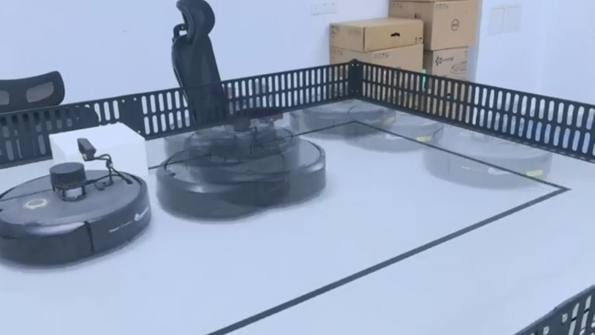
Unitree Arm
I developed and implemented autonomous trajectory planning and control algorithms for the Unitree Z1, a 6-DOF robotic arm.
Project Objective
To master manipulator kinematics and program the arm to perform precise, autonomous tasks, including a "pick-and-place" cycle and high-accuracy path following (drawing).
Technical Implementation & My Work
Kinematics & Control Spaces
Mastered the control of the 6-DOF arm by programming in both Joint Space and Task Space (Cartesian). This involved applying Forward and Inverse Kinematics (FK/IK) to command the arm's end-effector to specific 3D coordinates and orientations.
Smooth Trajectory Planning
Implemented 3rd and 5th-order polynomial trajectories for motion planning. This theoretical approach ensured all motions were smooth (C¹ or C² continuous), starting and ending with zero velocity and acceleration, which is critical for preventing jerky movements and overshoot on the physical hardware.
Autonomous Pick-and-Place
Developed a complete, autonomous pick-and-place program. I used the Unitree z1_sdk to sequence a series of waypoints, commanding the arm to:
- Move to a pre-grasp position (using
MoveJfor efficiency) - Approach the object (using
MoveLfor a linear path) - Actuate the gripper to grasp
- Lift and move to a drop-off location
- Release the object and return to a home position
High-Precision Path Following
Programmed the arm to perform high-precision Cartesian path following by autonomously drawing a perfect square with an end-effector-mounted marker. This required maintaining a constant end-effector orientation (perpendicular to the drawing surface) while executing four precise MoveL (linear) commands.
Simulation & Deployment
Validated all motion planning and control logic within the ROS/RViz simulation environment before safely deploying and executing the autonomous programs on the physical Unitree Z1 robot.
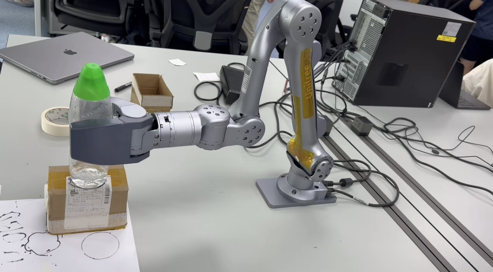
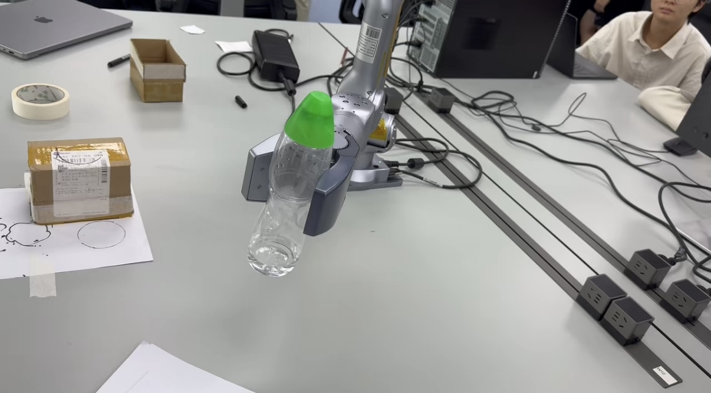
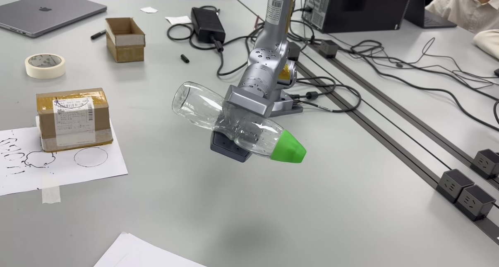
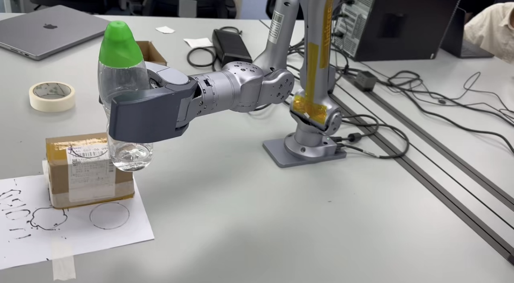

Delta Manipulator
This project focused on the control and application of high-speed parallel manipulators. I conducted a comprehensive theoretical review of Delta robot kinematics and advanced control strategies, and then applied this knowledge to program a GTHZ-300B industrial Delta robot for a high-speed pick-and-place task.
Project Objective
To implement and validate a complete, high-speed, and repeatable pick-and-place automation cycle on an industrial-grade parallel robot.
Theoretical Background
- Kinematics: Analyzed the 3-DOF parallel kinematic chain of the Delta robot, understanding how it achieves high-speed and high-precision translational movement (X, Y, Z) by constraining rotational degrees of freedom.
- Control Strategies: Researched a wide array of control methods for parallel manipulators, from traditional PID and Force Control to modern Learning-Based (RNN, RL) and Adaptive (SMC, ADRC) controllers.
Technical Implementation: Pick-and-Place
My core practical work involved programming the GTHZ-300B robot to autonomously move objects using a pneumatic suction gripper.
System Setup
- Configured the robot system, including power-on, safety checks, and setting the pneumatic system's air pressure to the required 4 bar for the gripper.
Teach Pendant Programming
- Used a "teach-by-example" workflow. I manually jogged the robot arm to each critical waypoint in the task and recorded their precise Cartesian coordinates (X, Y, Z, RZ).
Sequential Program Logic
Developed an autonomous program by sequencing a series of low-level commands. The logic for a single pick-and-place cycle was:
- Initialize: SetRobot (ID 1) and AxisHome (Axis 4) to home the system.
- Set Speed: SetFinxedSpeed(0.1) to 10% for safe, repeatable motion.
- Move to Pick (Linear): MoveDoor to the recorded "Move to pick-up" coordinates (X: 57.7, Y: -26.2, Z: -241.6).
- Activate Gripper: SetOutputBeforeEnd(Channel: 0, Level: True) to engage the pneumatic suction cup.
- Lift Object: MoveDoor to the "Grab the object" coordinates (Z: -202.9) to safely lift it.
- Move to Place (Linear): MoveDoor to the "Place the object" coordinates (X: -62.4, Y: 93.9, Z: -238.7).
- Deactivate Gripper: SetOutputBeforeEnd(Channel: 0, Level: False) to release the object.
- End Cycle: SetRobotEnd and loop the program.
Outcome
Successfully deployed the program, resulting in a continuous, high-speed automation cycle that precisely picked up objects and moved them to the target location. This experiment validated my understanding of industrial robot programming, Cartesian-space control, and sequential logic for automation.

Rebound Robotics
Course: "PROJECT IN DESIGN FOR MANUFACTURING" (034371), Lecturer and Tutor: Dr. Anand Prakash DWIVEDI
As my capstone project, I led a team to design, analyze, and plan the manufacturing of a fully autonomous basketball training robot from scratch. The robot aims to solve the limitations of traditional fixed shooting machines (like "The Gun") by autonomously navigating, collecting balls from the entire court, and passing from multiple angles, providing athletes with dynamic, game-like training.
Project Objective
To design a manufacturable, robust, and autonomous mobile robot capable of navigation, ball collection, and passing to improve the efficiency and realism of basketball training.
My Core Role: Lead CAD Designer & Finite Element Analysis (FEA) Engineer
Mechanical System Design (My Lead Design Work)
I led the entire mechanical system design of the robot, creating detailed 3D models of all subsystems and the corresponding manufacturing drawings in SolidWorks.
Omnidirectional Chassis
Designed an omnidirectional chassis using four Mecanum Wheels. This design allows the robot to instantly translate and rotate on the spot, which is critical for rapid positioning and precise pass alignment on the court.
Roller-Conveyor Collection System
Designed an active collection mechanism. Elastic rollers at the front sweep the ball off the ground and onto a motor-driven conveyor system, which then lifts the ball vertically into the robot's internal storage hopper.
Internal Hopper Storage
Designed an internal funnel-shaped hopper with a 6-ball capacity. Through SolidWorks motion simulation, I optimized the internal guide slopes and geometry to use gravity to feed balls accurately into the launcher inlet and prevent jamming.
Dual Friction-Wheel Launcher
Designed a high-speed, dual-wheel friction launching system. By precisely controlling the speed of the two motors (via PWM), the system can adjust the pass velocity and power (e.g., from a soft chest pass to a high-speed, long-distance pass).
Engineering Analysis & Simulation (My Core Analysis Work)
To ensure the robot's durability and stability under high-intensity training, I conducted a comprehensive Finite Element Analysis (FEA) on critical load-bearing structures.
Chassis Static & Fatigue Analysis (FEA)
- Static Analysis: In SolidWorks Simulation, I simulated the stress on the chassis under full load (including batteries, motors, and all basketballs). The maximum von Mises stress was only $2.231 \times 10^8 N/m^2$, resulting in a Safety Factor (SF) of 2.24, far exceeding the 1.5 design requirement.
- Fatigue Analysis: Simulated the cyclic loading on the chassis from long-term, repetitive motion. The simulation showed that the fatigue safety factor in all critical regions was above 1.50, proving its long-term operational reliability.
Launcher Structural Rigidity Analysis (FEA)
- Static Analysis: Simulated the reaction force on the launcher structure at maximum motor torque. The results showed a maximum displacement of less than $1.61 \times 10^{-5}$ mm, indicating extremely high rigidity. This is crucial for ensuring pass accuracy and consistency.
- Fatigue Analysis: Fatigue analysis showed the launcher's expected life exceeds 1,000,000 cycles, with a fatigue safety factor over 2.00.
MATLAB Kinematic Simulation
Simulated the kinematic model of the Mecanum wheel chassis in MATLAB to validate the control algorithms, ensuring the robot could accurately execute omnidirectional commands (translation, rotation).
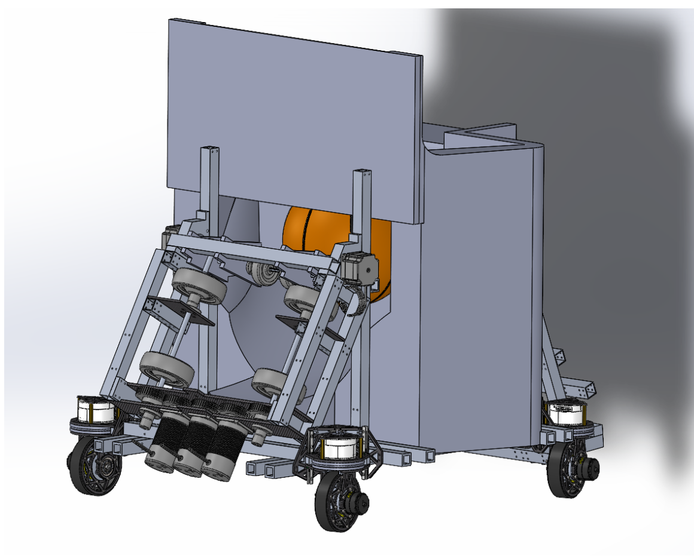
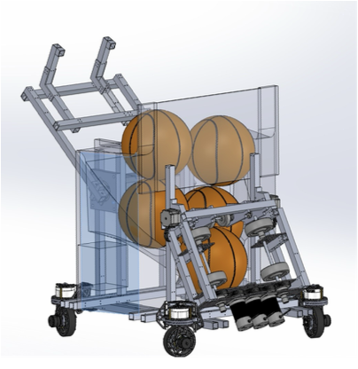
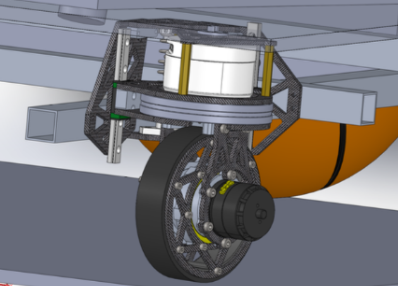
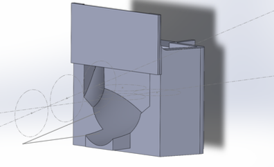
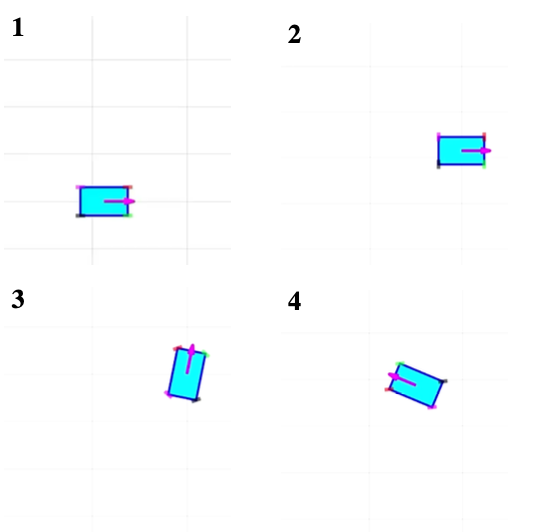
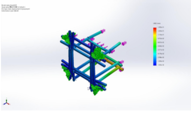
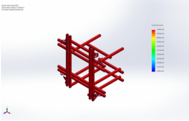
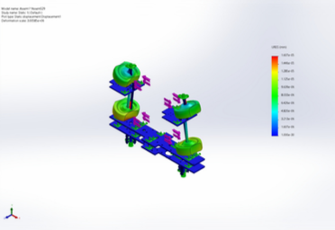
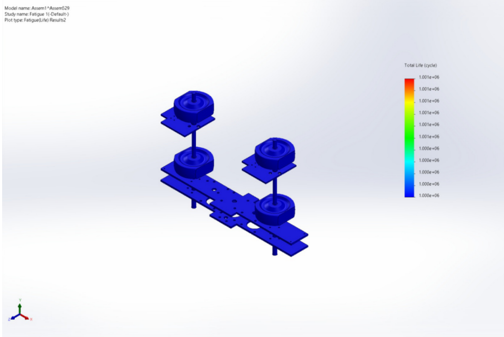